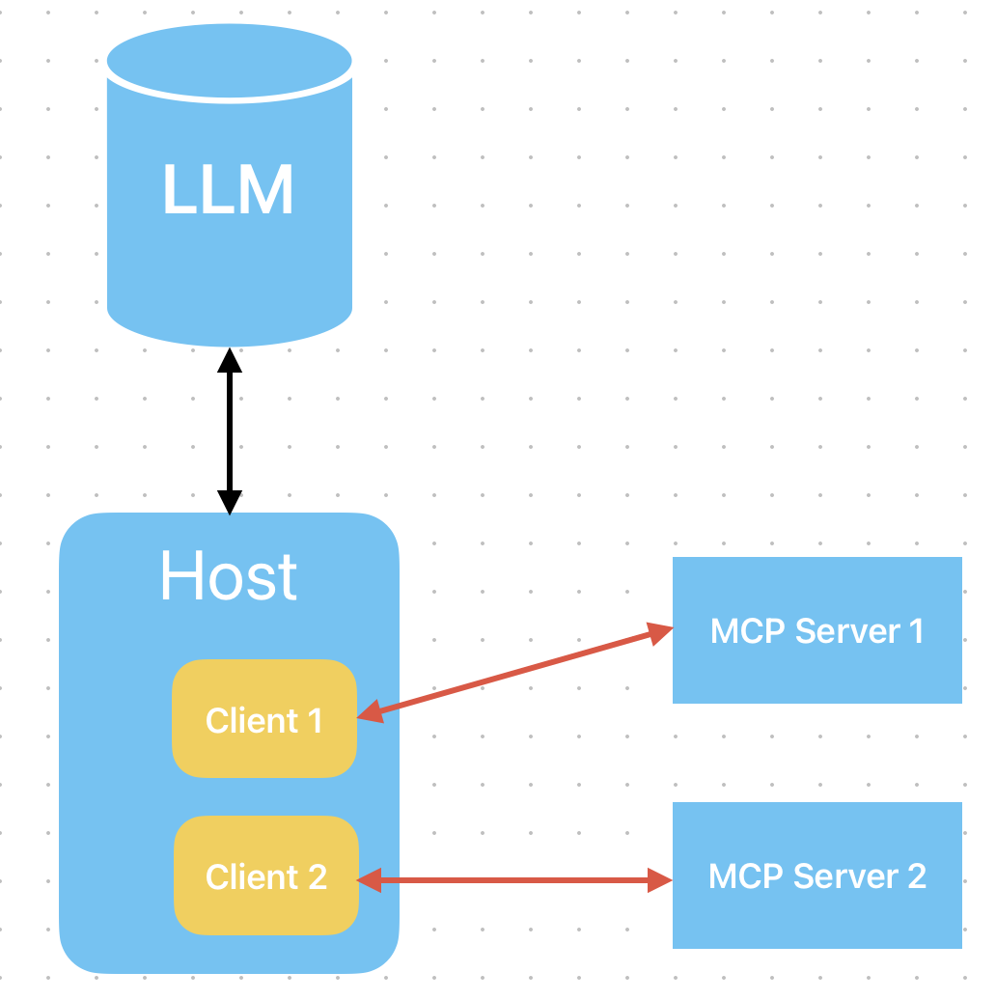
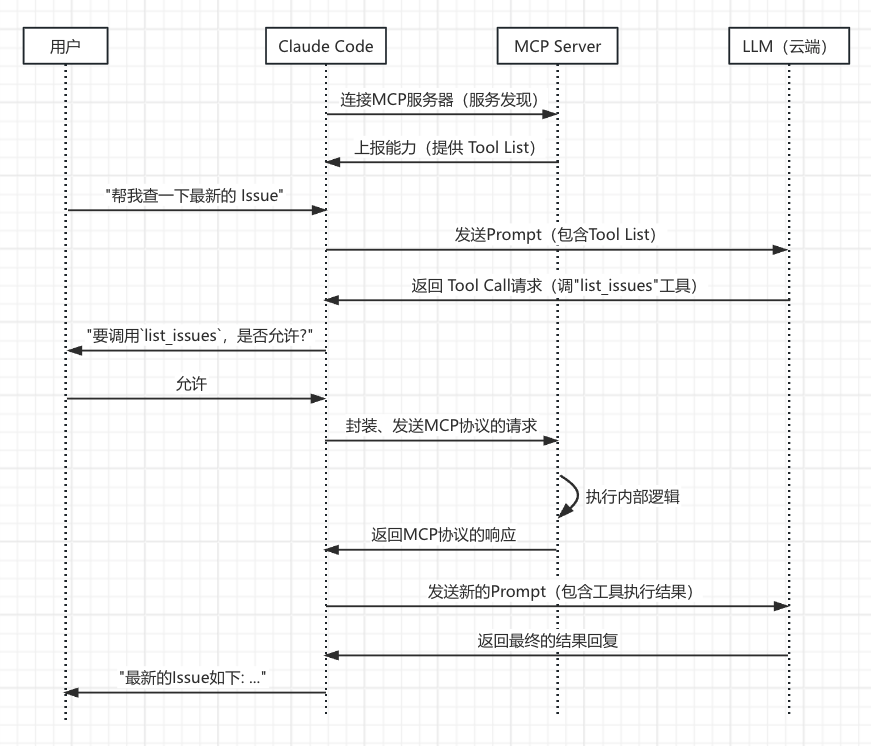
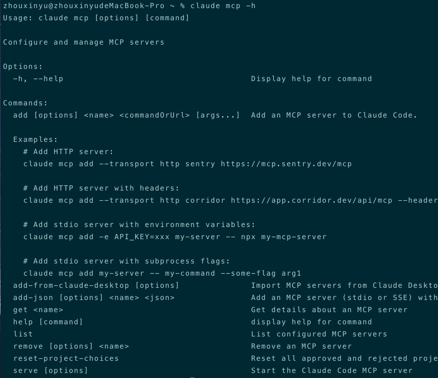
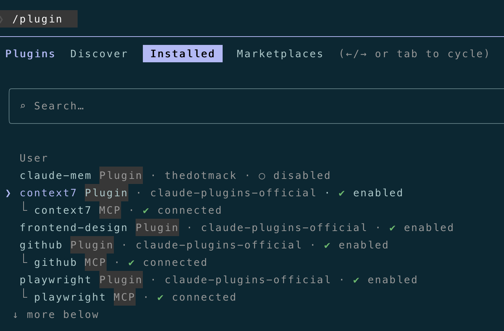
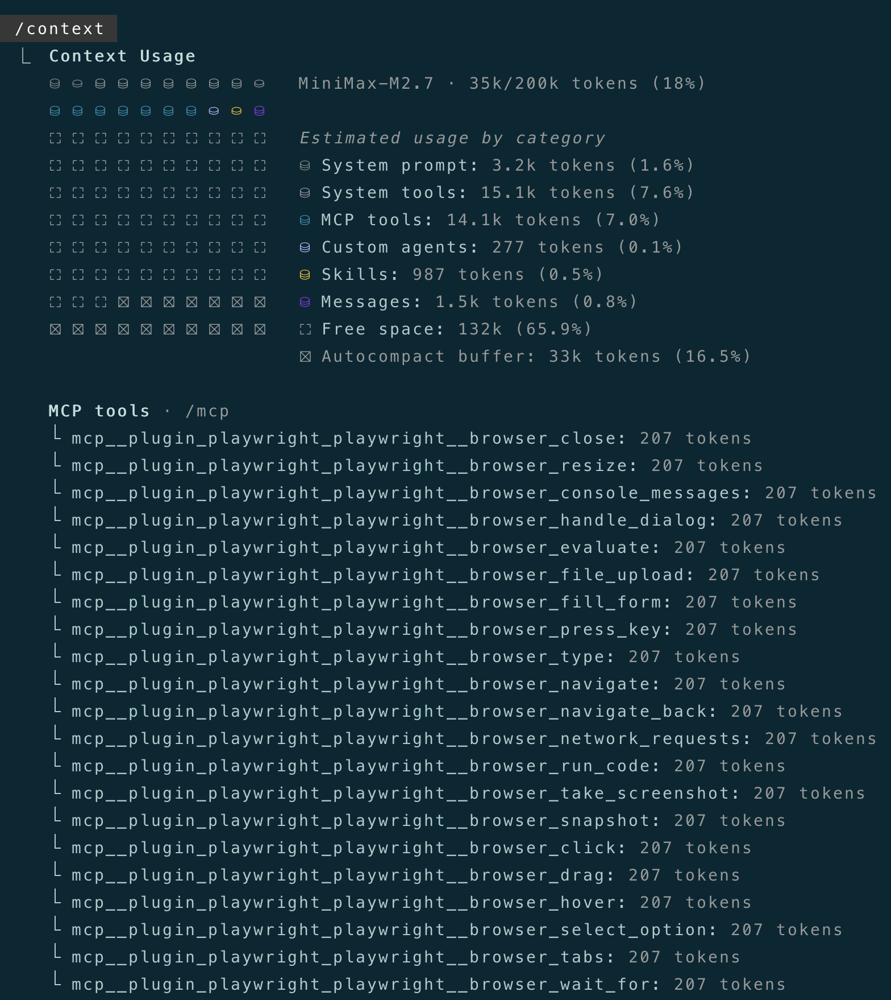
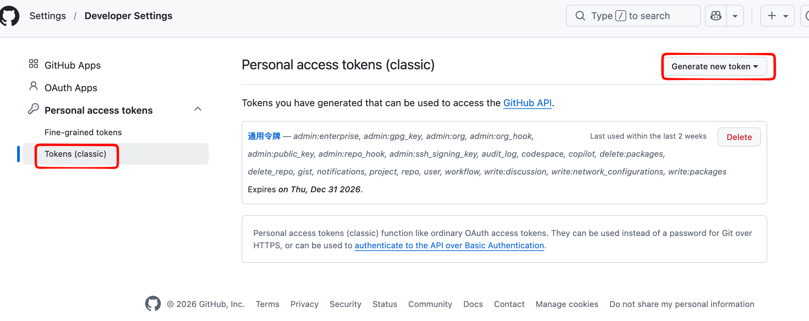
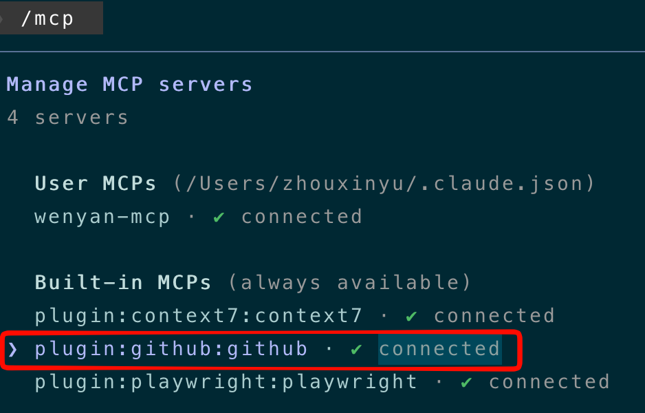
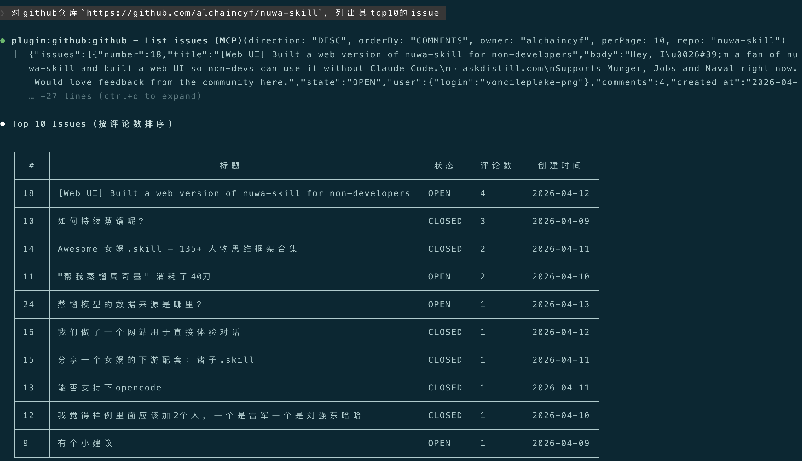
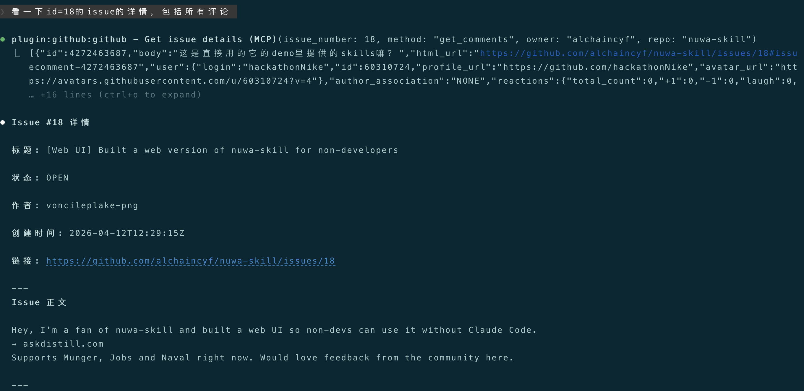
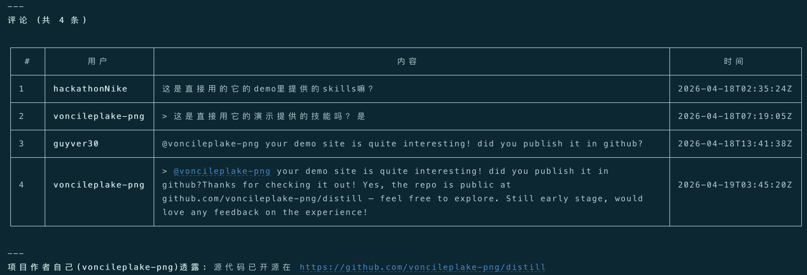

大家好，我是bytezhou，玩转Claude Code系列已经来到第六篇了，本篇我们将解锁AI能力扩展的秘密武器：MCP（Model Context Protocol），模型上下文协议。
为什么需要MCP？
Claude Code作为Coding Agent来说，已经非常强大了，可以读写文件、执行Shell命令等，但它的能力边界，也就仅限于它的内置工具集，那问题来了：
- 想让CC写完代码后自动在GitLab上提个MR，咋整？
- 想让CC自己去深度查找不同第三方组件的最新文档，咋弄？
- 想让CC自己去连接数据库并操作相关的表，咋办？
这些任务，CC的内置工具根本撑不住，它们需要AI具备一种全新的能力与外部世界通信和交互，这，就是今天要介绍的MCP。
总的来说，MCP是一套专门为AI Agent设计的通信协议，它定义了一套标准的"语言"，让AI可以与外部世界进行结构化通信。可以简单理解为，MCP是AI与外部世界的一个"适配器"。
MCP原理
先介绍一下MCP工作原理。MCP中有3个关键的角色定义：Client（客户端）、Server（服务器）、Host（主机），它本质上是Client-Server模型，但增加了一个"Host"角色。
Host（主机）：“总指挥”，用户直接使用的Agent应用，这儿的话，Host就是Claude Code本身，它主要负责：
- 直面用户，处理用户请求。
- 管理不同的Client实例。
- 作为云端LLM与所有Client之间的"总指挥"，分发任务。
Server（服务器）：“能力提供方”，独立的第三方服务，可以是本地的一个进程，也可以是远端服务。GitHub MCP Server、Playwright MCP Server等，都是服务器。
作为"能力提供方"，Server最重要的职责是向Host暴露自己的能力，即Tools（工具），也就是AI可以直接调用、执行的动作，比如 GitHub MCP的list_issues就是一个工具。
Client（客户端）：“连接器”，Host内部管理的实例，专门处理与对应Server的通信和交互，用户无感。
每一个MCP Server，在Host内都有一个专门的Client与其对应。该Client与Server建立1v1的连接、会话，处理底层协议、消息分发等，如下：

搞懂了这3个角色，咱们重新理一下**“Claude Code与MCP Server交互的过程”**：
Claude Code收到云端大模型的"Tool Call"调用请求后，通过内部管理的特定Client，将该请求封装成一个遵循MCP协议的请求，发给对应的Server。Server执行完成后，将结果返给Client，再由Claude Code把结果展现给用户、或者发给云端大模型进一步处理。

上述流程就是CC与MCP Server交互的完整示例，可以看到：
- **服务发现：**CC启动时，就会根据配置去连接MCP Server，MCP Server会主动向CC上报自己的"能力"，告诉它自己有哪些工具（Tool List）可以使用。
- **职责分离：**云端大模型只负责思考和发出"指令"，根据可用Tool List，发出"调用工具"的指令。Claude Code及内部管理的Client，负责将“调用工具”的指令封装成标准MCP协议的请求。MCP Server则响应对应的"Tool Call"，执行相关的工具逻辑。
配置MCP服务器
CC里配置MCP Server，有几种方式：一是直接通过claude mcp add命令手动添加，二是把别人配置好的mcp json直接拷贝到我们的配置文件里，三是直接通过插件市场安装对应的plugin即可。
咱们先介绍下claude mcp add命令，其中一个关键参数是--transport，即传输协议，主要有2种：
--transport http：连接远程、通过HTTP交互的 MCP Server。--transport stdio：连接本地、通过 stdin/stdout（标准输入输出）进行交互的 MCP Server。
另一个重要参数是--scope，决定了该MCP配置的作用域，主要也是2种：
| 参数配置 | 作用域 | 存放位置 | 使用场景 |
|---|---|---|---|
| –scope user | User（用户级） | ~/.claude.json | 个人私有的mcp配置，不上传git，不共享，对本地的所有项目生效 |
| –scope project | Project（项目级） | 项目根目录/.mcp.json | 团队公共的mcp配置，上传git，团队共享，仅对当前项目生效 |
这里MCP配置的"作用域"，和前几篇介绍的CLAUDE.md、Slash Command、Skills的作用域的概念和设计，是一脉相承的。
我们可以通过如下add-json命令直接添加一个"Project级"的GitHub MCP：
claude mcp add-json mcp_github '{"type":"http","url":"https://api.githubcopilot.com/mcp/","headers":{"Authorization":"Bearer ${GITHUB_TOKEN}"}}' --scope project
然后，你的项目根目录下的.mcp.json文件中，会多出这么一段内容：
{
"mcpServers": {
"mcp_github": {
"type": "http",
"url": "https://api.githubcopilot.com/mcp/",
"headers": {
"Authorization": "Bearer ${GITHUB_TOKEN}"
}
}
}
}
关于
claude mcp命令的相关参数，可以通过claude mcp -h命令查看帮助文档
前面说了，还可以把别人配置好的mcp json直接拷贝到我们的配置文件里，用户级的配置拷贝到~/.claude.json，项目级的配置拷贝到项目根目录/.mcp.json，比如，我把everything-claude-code项目（一个非常好用的CC神器）中的mcp-configs内容，拷贝到我相应的配置文件里即可，mcp-configs内容概览如下：
{
"mcpServers": {
"jira": {
"command": "uvx",
"args": ["mcp-atlassian==0.21.0"],
"env": {
"JIRA_URL": "YOUR_JIRA_URL_HERE",
"JIRA_EMAIL": "YOUR_JIRA_EMAIL_HERE",
"JIRA_API_TOKEN": "YOUR_JIRA_API_TOKEN_HERE"
},
"description": "Jira issue tracking — search, create, update, comment, transition issues"
},
"github": {
"command": "npx",
"args": ["-y", "@modelcontextprotocol/server-github"],
"env": {
"GITHUB_PERSONAL_ACCESS_TOKEN": "YOUR_GITHUB_PAT_HERE"
},
"description": "GitHub operations - PRs, issues, repos"
},
"supabase": {
"command": "npx",
"args": ["-y", "@supabase/mcp-server-supabase@latest", "--project-ref=YOUR_PROJECT_REF"],
"description": "Supabase database operations"
},
"vercel": {
"type": "http",
"url": "https://mcp.vercel.com",
"description": "Vercel deployments and projects"
},
"context7": {
"command": "npx",
"args": ["-y", "@upstash/context7-mcp@latest"],
"description": "Live documentation lookup — use with /docs command and documentation-lookup skill (resolve-library-id, query-docs)."
},
......
}
}
最简单的MCP配置方式，还是直接通过CC的插件市场安装对应的plugin，交互式界面直接选择添加插件，CC自动安转插件，安装完成并启用后，就可以直接使用对应的 MCP Server：

在CC中，可以通过/context命令看到当前加载的所有MCP Server的所有工具列表：

实战：集成GitHub MCP Server
我们在CC中配置GitHub MCP Server，给CC集成直接操作GitHub的能力，如创建Issue、fork仓库、拉取评论等。
1.配置GitHub MCP Server
启动CC，添加官方插件市场：
/plugin marketplace add https://github.com/anthropics/claude-plugins-official
添加插件市场后，在Discover面板中找到github插件，直接进行安装（建议选user scope）。插件安装完成后，就可以在Installed面板中看到github MCP了：
2.创建并设置GitHub Token
想要成功连上GitHub MCP Server，还缺一个东西：GitHub Token，你的github“通行证”，我们先创建一个。
点击你的github主页右上角 -> 选择 Settings -> 拉到页面下方，选择Developer settings，然后你看到下面这个页面：

点击"Generate new token"（classic的），跟着页面引导一步一步操作，最后会生成一个"通用令牌"，这个"通用令牌"就是你的GitHub Token，请记下该token，务必不要泄露！
有了GitHub Token后，我们回来配置环境变量：GITHUB_PERSONAL_ACCESS_TOKEN。
Linux/macOS中，一般在~/.bash_profile文件中添加环境变量：
export GITHUB_PERSONAL_ACCESS_TOKEN=你的GitHub Token
添加后重启终端，然后启动Claude Code，输入/mcp，看到github mcp是connected状态，即代表配置、连接成功：

3.用人类语言操作GitHub
GitHub MCP Server集成完毕，接下来，我们在CC中直接使用人类语言来操作GitHub。
对github仓库`https://github.com/alchaincyf/nuwa-skill`，列出其top10的issue

可以看到，CC自动调用了GitHub MCP的List issues工具，找到了top10的issues，我们继续：
看一下id=18的issue的详情，包括所有评论


可以看到，CC自动调用了GitHub MCP的Get issue details工具，列出了id=18的issue详情和评论。
这就是MCP扩展的威力，通过Claude Code中的简单配置和一个环境变量，就把AI和强大的远端GitHub MCP Server无缝连接，让我们在本地可以直接用人类语言操作GitHub，太强了。
结语
本篇从MCP原理出发，详细介绍了如何在Claude Code中配置MCP，最后演示了如何集成GitHub MCP Server、并用人类语言进行相关操作，可以看到，MCP极大扩展了AI Agent的能力。
下一篇，我们将自己动手写一个自定义的MCP Server，给Claude Code插上"我们的翅膀"。
感谢你点开这篇文章，欢迎关注我的公众号：10年码农，纯技术分享，一起在AI时代探索未来！

客官您满意的话，感谢打赏。